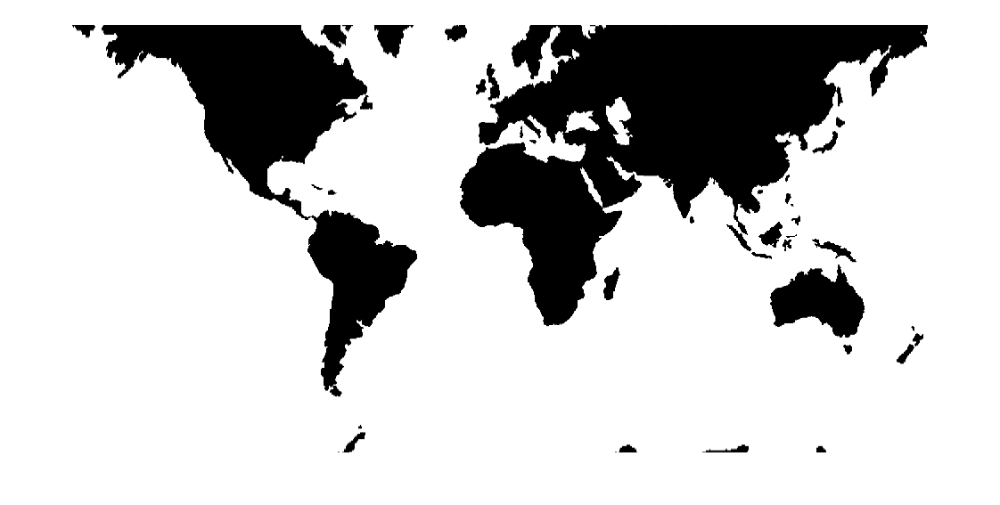

Question 4(B): Mercartor projection
clc;
close all;
im = double(imread('map.gif'));
s = size(im);
b = s(1)/2;
l = s(2)/2;
dom_l_min = -1;
dom_l_max = 1;
dom_b_min = -pi/2;
dom_b_max = pi/2;
step1 = (dom_l_max - dom_l_min)/l/2;
step2 = (dom_b_max - dom_b_min)/b/2;
[x_or y_or] = meshgrid(dom_l_min:step1:dom_l_max-step1,dom_b_min:step2:dom_b_max-step2);
ran_l_min = -1;
ran_l_max = 1;
ran_b_min = -pi/2;
ran_b_max = pi/2;
step_1 = (ran_l_max - ran_l_min)/l/2;
step_2 = (ran_b_max - ran_b_min)/b/2;
[x_ne y_ne] = meshgrid(ran_l_min:step_1:ran_l_max-step_1,ran_b_min:step_2:ran_b_max-step_2);
x_old = x_ne;
z = exp(y_ne);
y_old = 2*(atan(z) - pi/4);
imnew = interp2(x_or,y_or,im,x_old,y_old);
imshow(imnew);
Warning: Image is too big to fit on screen; displaying at 67%
